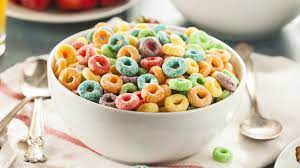

Exceptional Cereal

Description
Studies have shown that not eating cereal daily results in loss of hair and toenails. Let's save those feet and give you the locks you've always wanted with this simple recipe.
Ingredients
- Bowl - you have to hold that sweet yummy goodness in something! We suggest a bowl over your hand or bellybutton.
- Spoon - we've tried this recipe with a fork and knife as well and found that the spoon is the best option.
- Cereal - it's a tough choice, but one you'll have to make. What will you fill your bowl with? I suggest Apple Jacks because I love my mouth bleeding but still enjoying a tasty treat.
- Milk - and not that fake almond milk either. Grab some real milk straight out of the utter (or tittie). Whatever you can get your hands on as long as it's REAL milk.
Steps
- Get your bowl ready - take it out. Slam it on the table and allow it to sit for 10 minutes for no reason.
- Add cereal - do not switch this step for step 3. If you do, go ahead and throw your bowl away and start over.
- Add milk - pour it nicely over the cereal. Try not to overfill the bowl and create a mess. Get all the cereal wet.
- Get your spoon - put it in the bowl. You'll want to use your hand to grasp the spoon and shovel the cereal into your hole.
- Serve - get behind the wheel of your Land Rover and go. Now you can enjoy your cereal.